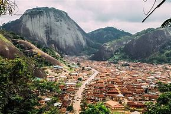

About Me
Hello! I'm Precious Chibueze Anietem, a web development enthusiast with a passion for creating engaging and dynamic websites. Currently studying Dynamic Web Fundamentals in WDD 131, I really enjoy exploring new design techniques and learning the best practices for front-end development. In my free time, I love reading, hiking, and experimenting with new coding projects. My goal is to become a proficient web developer and contribute to impactful projects that make a difference.
Connect with me on LinkedIn
Ondo State, Nigeria
Ondo State, located in southwestern Nigeria, is known for its rich cultural heritage and natural beauty. With a population of over 3 million people, the state is a hub for agriculture, producing crops like cocoa, cashews, and rubber. Ondo State is also home to stunning landmarks, including the Idanre Hills, a UNESCO World Heritage site, where visitors can explore ancient settlements and take in breathtaking views. Known as the "Sunshine State," Ondo is celebrated for its friendly people, rich history, and vibrant festivals.
Learn more about Ondo State